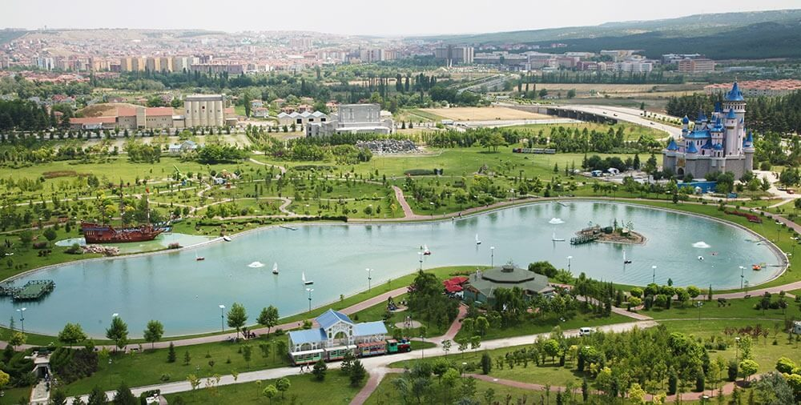
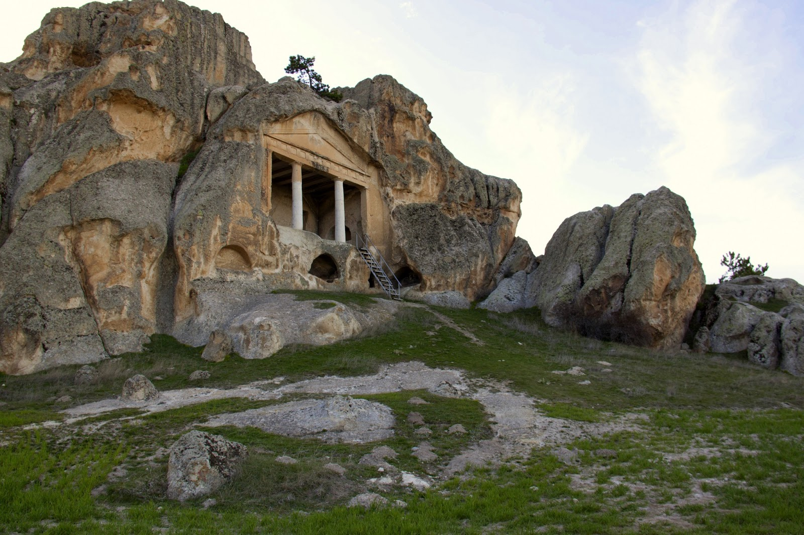

Porsuk Çayı – Adalar
Eskişehir's famous Porsuk Brook and the important settlement of the region Adalar Eskişehir are the first places in our list.
Porsuk Creek and the Islands Region is one of the most beautiful and lively regions of Eskisehir.
Porsuk Brook is the longest branch of the Sakarya River with a length of 450 kilometers. This tea, which is fed from two strong rivers such as Bayatçık Stream and Kızıltaş Water Stream, has long been neglected but has been rapidly turned into a touristic value in recent years. This tea, which feeds two dams, also has a strong position among the economic factors of the region.
Almost every point of the Porsuk Brook is worth seeing. However, the points that tourists usually prefer are the central places. To get there, trams "İsmet İnönü" and "Çarşı" stops can be reached.
Odunpazarı Evleri
Odunpazarı Houses are among the most important works that Eskişehir adds to world cultural heritage. These places, which have been praised by many travelers since Evliya Çelebi has been one of the important tourism centers in terms of Eskişehir. Odunpazarı Houses are within the boundaries of Odunpazarı Municipality from two central districts of Eskişehir. These houses, which are the oldest settlements of Eskişehir, have been restored by the municipality considering the historical and cultural importance. In a very short time these buildings which have achieved world-wide reputation must be seen by every traveler who is going to Eskişehir. Odunpazarı Evleri is located in the region around the Ataturk High School. There are various museums, cultural and commercial value stores, a few landmarks, associations and cultural centers. Among the most important monuments in the region are Kursunlu Kulliyesi and Atatürk High School. In the old days, while the commercial life of the city was shaped around the Hamamyolu Yediler Park, settlements were established in this area. Currently, Hamamyolu region is one of the important shopping centers. Some houses in Odunpazarı Houses are still used as residence.
The history of Odunpazarı Houses is identical with the history of Eskişehir. The Ottoman and Turkmen settlement forms are reflected in these houses which carry more Turkmen traces. These houses, which have been preserved and restored, are usually two storeys. If you do not count the cute, single-storey garden houses that suddenly come across when you are traveling around the region, the houses are built in a generous countryside splendor. These houses are two storeys. There are sections such as hall, kitchen warehouse on the lower floors, and the doors that usually go out to the back garden are located at the end of the hall. On the upper floors there are rooms. Today, although the architectural structure of the houses is known to be damaged, there are also constructions which have preserved the old form. Transportation to Odunpazarı Houses is easy and fast from all over the city. You can go there by going down to the "Atatürk Lisesi" stop of the tram that runs between the bus station and SSK. At the same time there is also a transfer center and stop which many buses in the region use. This side of the city can be considered as the center of Eskişehir transportation. That's why you can find many tools you can go to around Ataturk High School.
Kurşunlu Cami ve Külliyesi
Kurşunlu Mosque and Kulliye Eskişehir Odunpazarı is located within the borders of the county. Built in Odunpazarı Houses, this building dates back to 1517. It was built by Mustafa Pasha, who was named Gazi Melek with the sign of architect Acem Ali just before the architect Sinan. The building was opened in 1525 after an eight-year construction period. If you want to visit Kurşunlu Mosque and Complex, you should go through Odunpazari Houses to a pleasant history trip. The impression that you are living in the Ottoman period will become even stronger when you come to the area where the mosque is located. The dome will offer a good sightseeing experience with its magnificent dome and silent gardens.
The complex is located in Odunpazarı, the oldest settlement of Eskişehir. It is at walking distance when you get off at "Atatürk Lisesi" stop by tram. The trams passing the Atatürk High School stop are between the bus station and SSK. Most buses also use Atatürk High School and its stops. For transportation to the mound, you have to pass through Odunpazari Houses. The region is an important transfer center in Eskişehir transportation. So it is very easy to get here.
Sazova Parkı
The official name of Eskisehir's largest park, known as Sazova Park, is Sazova Science Culture and Art Park. As its name implies, this is not a park built in a classical sense. construction work in the park is considered one of the most unique parks in Turkey is still continuing. Sazova Park has an area of 400 thousand square meters. This is the side of Turkey has the distinction of being larger than a parking lot. This park, which houses restaurants and coffee houses, Masal Pavilion, Space House, Underwater World, Amphitheater, Science Experiment Center, Pirate Ship, sightseeing and playgrounds, is a place to visit for at least half a day. You can also visit the park with a free sightseeing train in Sazova Park.

Sazova Park is located on Eskisehir Kütahya road. It is advised to go here with a private car. The parking lot in the park costs TL 1, making this transportation more attractive. However, it is also possible to reach the park easily and quickly by public transport. You can reach Sazova Park by bus number 11, bus number 11, which departs every 15 minutes from Odunpazarı, bus number 17, which departs 20 minutes, and bus number 31, which departs quarterly.
Atlıhan Çarşısı
Atlıhan Bazaar is located in Odunpazari, the oldest settlement of Eskisehir. This is the first settlement of Eskisehir. Odunpazarı Houses, known as the world's cultural heritage, are located in this district. Atlıhan Bazaar is located at the end of the road leading to the Kurşunlu Mosque and Kulliyesi from the historical Odunpazarı Houses. Many boutique shops lined up in a gigantic inn right next to the Kullian offer interesting products from one. These artifacts made and sold in the field of crafts are invaluable in terms of Eskişehir tourism. Every year, the bazaar welcomes many tourists, both domestic and foreign, and has earned a rightful reputation at an international level.
Atlıhan Bazaar Kurşunlu Mosque and Complex and Odunpazarı Houses are close to the historical centers of Eskişehir. There are also many cultural monuments in the area. Therefore, transportation to the bazaar is very easy. Ataturk High School can be reached by tram stop. There are also numerous buses in the area.
Eskişehir Kentpark
Kentpark is one of the most beautiful parks in Eskisehir. Situated in Turkey's first artificial beach for parking has led to the Kentpark known throughout the country. Apart from the beach, the park has many playgrounds, hiking trails, restaurants and cafes. It is unique in the beach area built in Kentpark. The water in the beach has been stagnant and the pooling criteria have been closed by the Ministry of Health due to not meeting the criteria. However, one year after it was closed, there was sand left by the pool and marble was laid in the pool. The re-usability of this beach has lost its originality and attracted the attention of the Eskisehir people who were away from the sea. This day plaja shows interest in boys aged 15 to 25 more. The swimming pool next to the artificial beach is also of great interest.
Kentpark is located just behind Eskişehir Bus Station. Trams, tourist boats, and buses can be used to get here. Although the bus goes long ways, it can be the only means of transportation from some places. Especially Gültepe, Sıhhıye Kavşağı, buses can be preferred. Trams should be preferred from the city center. The ride in the park is completely free.
Eskişehir Balmumu Heykel Müzesi
The full name is Yilmaz Büyükerşen Wax Museum of Sculpture. The Museum of Wax and Sculpture, which is the Wax Museum, welcomed the first visit on May 19, 2013. Located in many countries of the world, first as Madame Tussauds museum opened in 1835 in the UK's first and only example of Eskisehir in Turkey Waxworks Museum. Sculptures made of wax that are quite vibrant and evoke a real impression; the museum has a very impressive experience with visitors who come to see historic and popular people who have wax sculptures. In the museum; Eskisehir Metropolitan Mayor Prof. Dr. There are 160 wax sculptures composed of historical figures and local and foreign celebrities donated to the museum by Yılmaz Büyükerşen.

transportation to the museum at the center of the city; It can be reached on foot from many areas and it is possible to reach to the museum by many municipality buses such as Fevzi Çakmak Mah-Odunpazarı municipality bus no.
Midas Anıtı
Midas Monument is one of the most important historical monuments around Eskişehir. The greatest reason for this is that the work belongs to the Phrygians, whose linguists can not solve the language for a long time. The monument stands in a very important place in terms of illuminating the history of Phrygia. The Midas Monument is an important place for history, and it has received little attention until the 19th century. The first great information about the historical monument that attracted the attention of a British officer in this century was obtained about half a century later. By examining the writings on the Midas Memorial, it is understood that it is a history dating back to the 550th century BC. The research shows that the first settlement in the region dates back to 3000 BC. The area is considered a sanctuary for a very long time starting from the first settlement. The Phrygians who dominated the region reached the peak of their art during the famous King Midas period and gave their works with a unique artistic understanding.hat's why it would be good to get it from the places where real masters work instead of doing it at home for a good meal.

The Midas Monument is located approximately 80 km from the center of Eskişehir. Those who want to see Abideyi in Yazilikaya village of Khan district can easily reach there by using minibuses that leave from the autogar.
Yunus Emre Türbesi
There are various narrations about Yunu Emre Tomb. The rumor is that the province is in Karaman. The second narration is based on the fact that it is located in Sarıköy bound to the district of Mihalıççık in Eskişehir. Along with these, names of many provinces also pass. However, Eskisehir and Karaman are known as prominent illusions in this respect. Although Yunus Emre Turbesi is not considered to be in Eskişehir, Sarıköy should be visited, where an important structure dating from the Seljuk period is found. The tomb, dedicated to Yunus Emre, is one of the most important works of the period. The date of the turban found here today dates back to 1970. Despite this fact, the Selçuklu traces remain in the building. Unlike the tumulus of the period and its aftermath, the tomb is exhibited in an open space under a fountain-like space.

Yunus Emre Mausoleum is located in the town of Mihalıççık. There is a vehicle on the average time from the Eskişehir bus station in the district. Once you reach here, transportation to the tobey will be possible in every way. Visit tomb and to visit the mosque is free. Do not end your trip to Eskişehir without seeing an important historical monument dedicated to one of the world's greatest leaders.
<
Previous Page |
Next Page |